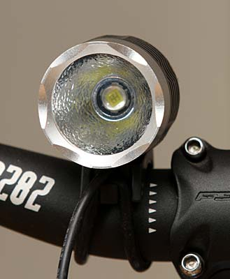
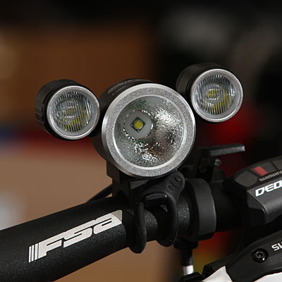
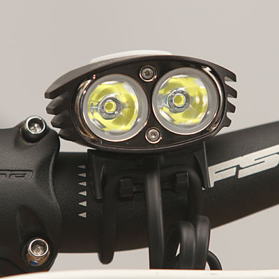
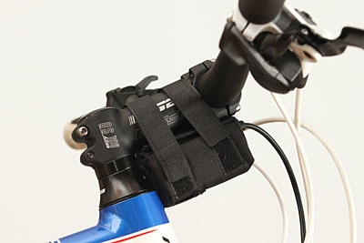
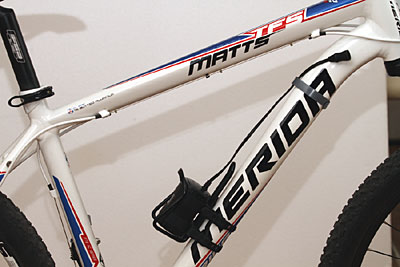

LED & illuminazione
Test LED LAMPS MagicShine
Lampade per utilizzo professionale MTB 24h "Luce led" di R.Chirio
Indice della pagina
MagicShine MJ 808
MagicShine MJ 816
MagicShine MJ 880



- Faretto compatto con LED singolo, della potenza di circa 10W, disponibile con led SEOUL P7, oppure con 1 led Cree XM-L
- Resa luminosa: 900/1000 Lumen
- Peso totale con pacco batteria: 450g
- Faretto compatto con 3 LED, della potenza di circa 16W, con 1 led Cree XM-L e 2 led Cree XP-E
- Resa luminosa: 1400 Lumen
- Peso totale con pacco batteria: 550g
- Faretto compatto, della potenza di circa 20W, con 2 led Cree XM-L
- Resa luminosa: 2000 Lumen
- Peso totale con pacco batteria: 620g

- Pacco batteria 4,4Ah di piccole dimensioni, facile da sistemare sul manubrio.
- Pacco batteria 4,4Ah di piccole dimensioni, facile da sistemare sul manubrio.

- Pacco batteria da 6,6Ah è meglio sistemarlo nella sede del portaborraccia.
Prova schermo 1mt
{kind=link}
Centro 4020 Lux
Bordi 50 Lux
Fascio alla distanza di 1mt.
{kind=link}
Centro 5540 Lux
Bordi 118 Lux
Fascio spot alla distanza di 1mt.
{kind=link}
Centro 900 Lux
Bordi 160 Lux
Fascio Wide alla distanza di 1mt.
{kind=link}
Centro 6930 Lux
Bordi 260 Lux
Fascio Wide + Spot alla distanza di 1mt.
{kind=link}
Centro 8400 Lux
Bordi 110 Lux
Fascio alla distanza di 1mt.
Prova sterrato 30mt
{kind=link}
Fascio alla distanza di 30mt.
{kind=link}
Fascio spot alla distanza di 30mt.
{kind=link}
Fascio wide alla distanza di 30mt.
{kind=link}
Fascio Wide + Spot alla distanza di 30mt.
{kind=link}
Fascio full power alla distanza di 30mt.
Prova sterrato 100mt
{kind=link}
Fascio alla distanza di 100mt.
{kind=link}
Fascio Wide + Spot alla distanza di 100mt.
{kind=link}
Fascio full power alla distanza di 100mt.
Prova video in notturna
in preparazione
in preparazione
in preparazione
Autonomia rilevata
Autonomie rilevate:
- circa 10 ore in low
- circa 3 ore in full
Autonomie rilevate:
- oltre 10 ore in low (4 livelli)
- circa 2 ore in full
Autonomie rilevate:
- oltre 10 ore in low (4 livelli)
- circa 2 ore in full
Cosa mi piace:
- Lampada valida, sia per uso MTB, adatta anche per altri impieghi, quale headlamp per sci alpinismo, speleo e per usi professionali quali protezione civile...
- Buona autonomia
- Prezzo contenuto
- Lampada valida, adatta solo per uso MTB 24h
- Ottima luce anche a fascio largo
- Buona autonomia con le potenze ridotte
- Ottimo il pulsante accensione staccato, perfetto per gara 24h
- Ottima la visualizzazione autonomia sul pulsante.
- Luce molto potente, adatta solo per uso MTB 24h.
- Buona autonomia riducendo potenza.
- Dimensioni ridotte
Cosa non mi piace:
- Scalda parecchio se lasciata in full per oltre 1 ora
- Pulsante scomodo da azionare.
- Fissaggio manubrio, un po’ debole
- Scalda parecchio se lasciata in full per oltre 1 ora senza ventilazione.
- Pulsanti piccoli e molto scomodi da azionare in gara.
- Fissaggio manubrio, un po’ debole
Valutazione:
- Funzionalità: 7
- Autonomia: 8
- Illuminazione: 7
- Funzionalità: 9
- Autonomia: 7
- Illuminazione: 9
- Funzionalità: 6
- Autonomia: 7
- Illuminazione: 9
Commenti finali:
E' stata la prima delle MagicShine, uscita 3 anni fa, ottima per chi vuole fare un'escursione notturna con amici, per una 24h è un po scarsa, specialmente in curva.
Usando una seconda lampada MJ808 montata sul casco, si ottengono ottimi risultati in gara.
E' la migliore per uso agonistico, ottimi valori di luminosità in curva. Molto funzionali i comandi.
Con il comodo comando a pulsante è possibile cambiare fascio e potenza con estrema semplicità senza staccare le mani dal manubrio, dosando la potenza si possono ottenere lunghe autonomie.
E' la più potente della serie, adatta per chi dà il massimo in solo 2 ore di luce forte, in quanto è molto scomodo azionare i pulsanti per riduzione potenza. Si parte subito forte con tutta la luce disponibile.
Consigliata per chi va sempre al massimo, anche di notte....
pubblicato 16 aprile 2012
© Roberto Chirio: all rights reserved.